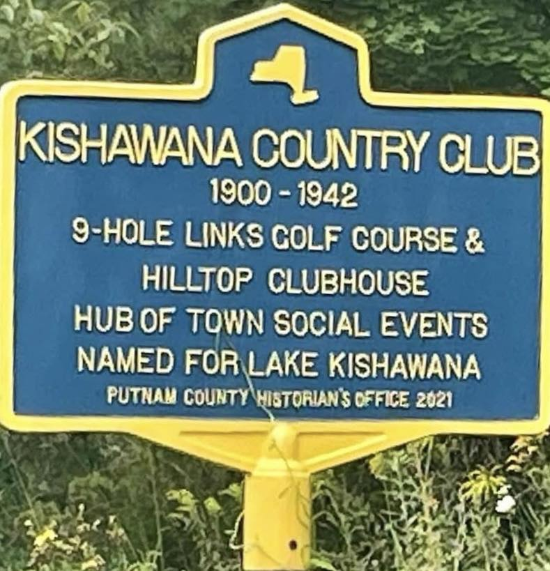
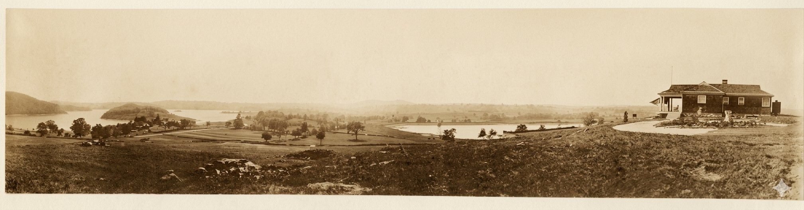

Kishawana Country Club
NYS Route 22, on the high ground above the former Lake Kishawana.

KISHAWANA COUNTRY CLUB
1900–1942
9-Hole Links Golf Course &
Hilltop Clubhouse
Hub of Town Social Events
Named for Lake Kishawana
About this Marker
The name on the marker outlived the lake it commemorates. Lake Kishawana — called Mud Pond by the farmers who lived around it, labeled Kishewanna Lake on the 1867 Beers atlas, and lying at the geographic center of the village of Southeast Centre — was a natural body of water roughly twenty-three acres in extent. The Brewster Standard’s Southeast Centre column reported in January 1876 that “Mud Pond has been yielding a fine supply of perch and pickerel to the numerous fishermen of this neighborhood.”
That changed in 1887. When the City of New York published the New Aqueduct Notice in the Brewster Standard on July 22 that year, the lake itself was named in the taking. As a follow-up article one week later put it: “Kishawana Lake (Mud Pond), Parcel 79, 23.549 acres.” The City was not merely condemning the surrounding farms — they were condemning the lake. By 1892, the Bog Brook Reservoir had “obliterated Mud Pond or Lake Kishawana” along with most of the old farms around it.
The country club opened in 1900 — eight years after the lake was destroyed and the village around it dispersed. The 9-hole golf course and hilltop clubhouse occupied the high ground above the new reservoir, the elevated vantage that had once looked down on Mud Pond now looking down on the artificial impoundment that replaced it. The club operated for four decades as a center of town social life before closing in 1942. The lake’s name was carried forward into the new century by the institution that took its place.
From the Club Era

![Two-panel score card from the Kishawana Country Club, Brewster, NY. Cover shows the club name with a chief-in-headdress motif and SCORE CARD title. Reverse page lists golf etiquette: 'Courtesy is the first requisite of Golf. Be quiet when others are playing. Replace turf cut in play, and smooth out footprints in bunkers. Slow players and those looking for balls should always allow faster players to pass through. U.S.G.A. Rules govern all other play.' Printer mark at bottom: Union Bank Note Co., Kansas City.](../images/markers/kishawana-scorecard.png)
Town of Southeast, NY
Sources
- On-site photograph of the Putnam County Historian’s Office marker (2021).
- Southeast Centre research project on this site — primary-source documentation of Lake Kishawana / Mud Pond, including the July 22 and July 29, 1887 New Aqueduct Notice articles in the Brewster Standard (Parcel 79, 23.549 acres) and the January 14, 1876 “South East Centre” column reference to perch and pickerel fishing at Mud Pond.
- Louise Hasbrouck Zimm et al., Southeastern New York, Vol. II (Lewis Historical Publishing, 1946) — obliteration of Mud Pond / Lake Kishawana by the Bog Brook Reservoir “by 1892” (p. 986).
- 1867 F.W. Beers atlas of Putnam County — labels the lake as “Kishewanna Lake.”
- R.F. O’Connor, Map of Putnam County (1854) — earliest cartographic record of the lake at the village center.
- Historical photograph and score card: original period documents restored from deteriorating originals using AI image processing.